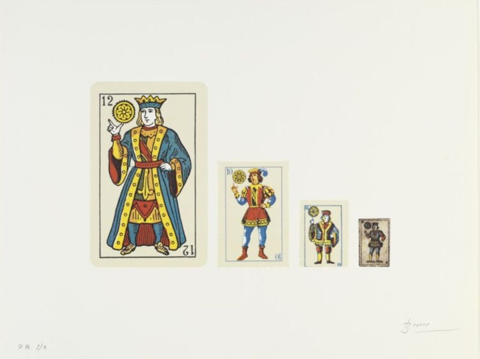

Poesía Contemporánea
Poesía Confesional: Poemas de Sylvia Plath.
Espejo
Soy de plata y exacto. Sin prejuicios.
Y cuanto veo trago sin tardanza
tal y como es, intacto de amor u odio.
No soy cruel, solamente veraz:
ojo cuadrangular de un diosecillo.
En la pared opuesta paso el tiempo
meditando: rosa, moteada. Tanto ha que la miro
que es parte de mi corazón. Pero se mueve.
Rostros y oscuridad nos separansin cesar. Ahora soy un lago. Ciérnese
sobre mí una mujer, busca mi alcance.
Vuélvese a esos falaces, las luciérnagas
de la luna. Su espalda veo, fielmente
la reflejo. Ella me paga con lágrimas
y ademanes. Le importa. Ella va y viene.
Su rostro con la noche sustituye
las mañanas. Me ahogó niña y vieja
Poesía Beat: Poemas de Allen Ginsberg.
Muere Dignamente En Tu Soledad
Viejo hombre,
Yo profetizo recompensasMás vastas que las arenas de Pachacamac
Más brillantes que una máscara de oro martillado
Más dulces que la alegría de ejércitos desnudos
fornicando en el campo de batalla
Más rápidas que un tiempo pasado entre la noche
de vieja Nazca y la de Lima nueva
en el crepúsculo
Más extrañas que nuestro encuentro cerca del palacio
Presidencial en un viejo café
fantasmas de una vieja ilusión, fantasmas
del amor indiferente.
Poesía de la Experiencia: Poemas de Sharon Olds.
Acusación De Oficiales De Alto Rango
En el zaguán arriba de del hueco de las escaleras
mi hermana y yo nos encontrábamos de noche,
ojos y pelo oscuro, los cuerpos
como gemelos en la oscuridad. No hablábamos
de los dos que nos habían llevado allí, como generales,
por sus propios motivos. Nos sentábamos compañeras
en la guerra fría, su cuerpo vivo la prueba de
mi cuerpo vivo, de espaldas al leve
cráter de obús de las escaleras, por donde
tendríamos que bajar, sin saber
más que lo que habíamos aprendido allí,
así que ahora
cuando pienso en mi hermana, las suturas
y las marcas de las golpizas de su doctor esposo,
y las cicatrices de las operaciones, siento la
ira de un soldado parado sobre el cuerpo de
alguien a quien mandaron al frente de batalla
sin entrenamiento
ni arma.
Poesía Visual: Trabajos de Joan Brossa.
Familia

Poesía Digital: Poemas interactivos de E-poetry.